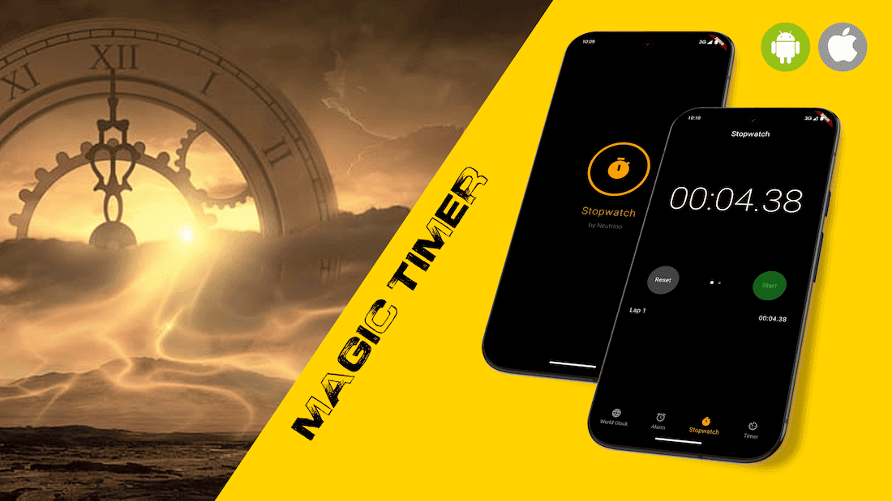

Magic timer app that always stops at a fixed sum of minutes, seconds, and milliseconds — surprising and puzzling!
Magic Timer is a Flutter stopwatch dressed up as a mentalist trick: whenever it is stopped, the displayed minutes, seconds and centiseconds are quietly rewritten so their sum always equals the same target value — 42 by default. The performer starts and stops the watch normally, but the instant it stops, only the centiseconds field is recalculated to force the total, so the trick reads as an impossible coincidence rather than a rigged number.
The shell around the trick is a faithful, dark-themed mock-up of Apple's Clock app: a splash screen that fades into a four-tab layout (World Clock, Alarm, Stopwatch, Timer), with only the Stopwatch tab wired up — the other three are deliberately left as placeholders, since they exist purely to sell the "real clock app" illusion the trick depends on.
The target sum and whether the custom calculation is even active are both configurable and persisted
across launches with shared_preferences: a long press on the time display opens a
settings dialog to change the target, while the trick itself can be silently toggled on or off with
the phone's volume-down button — no UI, no visible tell — so a performer can switch
between "honest" and "magic" mode mid-routine.
target − minutes − seconds, with
wrap-around handling for negative or over-99 results, so minutes + seconds + centiseconds always
equals the configured target (42 by default).RawKeyboard, no on-screen control) silently toggles the custom calculation, letting
a performer alternate between a genuinely accurate stopwatch and the rigged one without the
audience noticing anything changed.Settings dialog
to type in a new target value, saved immediately so the next stop uses it.shared_preferences, so they survive an app restart instead of resetting
to the default every time.AnimationController drives a growing circular
progress ring, a scale-in with an elastic bounce, a fade-in stopwatch icon and title, and a
color tween from light to full orange, before cross-fading into the main app.BottomNavigationBar with World Clock,
Alarm, Stopwatch and Timer tabs backed by a TabController, with swiping disabled so
the illusion of a normal system clock app holds together even though only Stopwatch has real
content behind it.MethodChannel
asks the Android side whether the device uses gesture or 3-button navigation and picks
SystemUiMode.manual (bottom overlay only) or immersiveSticky
accordingly, so the stopwatch never gets pushed around by the nav bar reappearing.Implements the whole trick as a single StatefulWidget: the real
Stopwatch/Timer.periodic tick loop, the fixed-sum recalculation
and its wrap-around edge cases, the lap list, the hidden volume-key toggle via
RawKeyboard, and the splash screen's tween/curve choreography — all with
plain dart:async, no external state-management package.
Builds the iOS Clock-style shell with TabController /
BottomNavigationBar, renders the tabular-figure time display with
FontFeature.tabularFigures() so digits don't jitter as they update, and drives
the splash animation with AnimationController plus
CurvedAnimation/Tween combinations (elastic scale, eased opacity,
color interpolation).
Persists the two pieces of user-configurable state — the target sum and whether the fixed-sum calculation is enabled — to local key-value storage, loading them back on startup so the performer's setup carries over between sessions.
A native MethodChannel ("navigation_mode_channel") queries the Android side for
the active navigation mode at startup, so the app can choose the system UI overlay mode that
keeps the stopwatch full-screen regardless of gesture or button navigation.